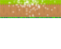
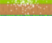

Plataformas
 

A primeira plataforma é a plataforma fixa, durante o jogo você a encontrará fixa e poderá utiliza-las a seu favor livremente para pular quantas vezes for necessário.
A segunda plataforma é a plataforma móvel, durante o jogo você a encontrará em movimento e poderá utiliza-las a seu favor livremente, porém com uma dificuldade maior.
A terceira plataforma é a plataforma quebrável, durante o jogo você a encontrará fixa, porém não poderá utiliza-la a seu favor pois caso você caia nela você não voltará a pular e cairá, podendo perder o jogo.
A quarta plataforma é a plataforma unica, durante o jogo você a encontrará fixa, porém tome cuidado ao utiliza-la, pois ao pular nela ela sumirá e você não terá mais chance de pular na mesma plataforma.
Você encontrará durante o jogo uma Mola em cima de uma das plataformas, ao pular em cima dela você ganhará um forte impulso que dará uma incrível vantagem de jogo.